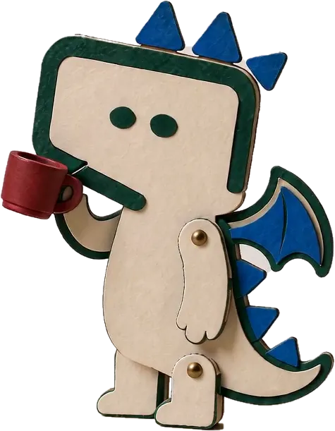

Первый бот.
Большой шаг.
Пусть на повторяющиеся вопросы отвечает AI.
А вы — занимайтесь тем, что двигает бизнес.
Начните с простого: вместе с Кариной создайте своего первого AI-бота в MyBotica. От настроек до первого ответа клиенту — без программирования.
Открытый доступ
AI-ПОМОЩНИК
Один понятный урок.
Первый шаг к своему AI-боту.
Из «как это работает?»
в «я могу это сделать».
Разберём платформу на реальном примере —
создадим администратора салона красоты
и проверим его в тестовом чате.
Откройте MyBotica в соседней вкладке и повторяйте шаги из урока.
Что разберём
в этом уроке
- 01Настройки бота
Модель AI, правила ответов и основные параметры.
- 02Инструкция и знания
Как задать задачу боту и добавить информацию о бизнесе.
- 03Первый тестовый диалог
Как проверить ответы перед запуском и понять, что улучшить.
Не нужно начинать
с большого проекта.
Выберите одну задачу: отвечать на вопросы о ценах, консультировать по услугам или помогать с записью. Дайте боту понятные правила — и начните с тестового диалога.
Одна задача. Понятная инструкция. Первый диалог.
Карина
Комяк.
Директор по развитию компании MyBotica
В этом уроке Карина проводит вас по платформе шаг за шагом: показывает настройки, объясняет роль инструкции и базы знаний, создаёт бота и тестирует его ответы.
Начните с одного понятного процесса.
Так проще задать боту задачу
и проверить результат.

Ваш первый бот
ждёт своего старта.
Посмотрели урок? Откройте платформу
и попробуйте создать своего помощника.